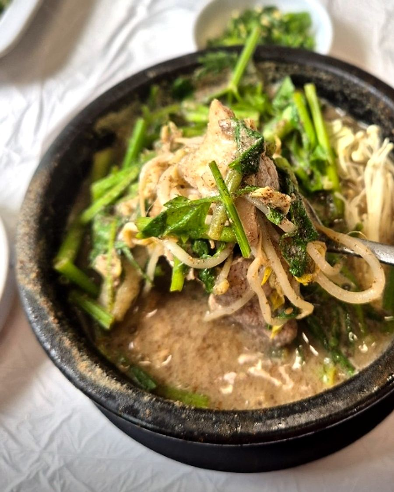
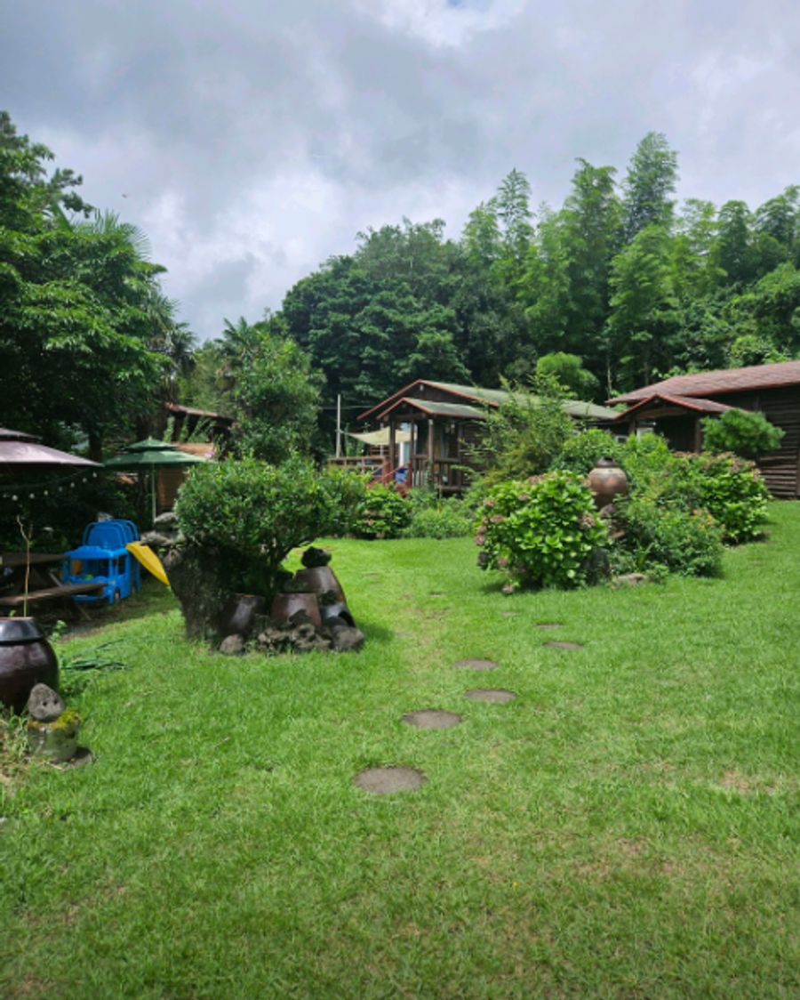
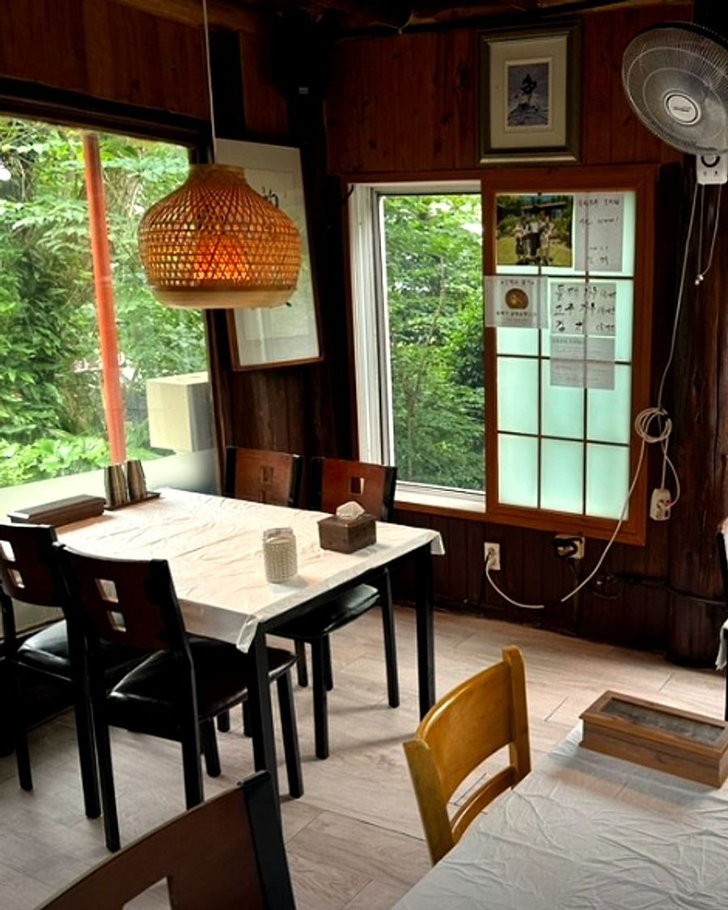

숲속에서 끓이는 들깨 오리탕, 들렁모루
제주 서귀포 서홍동 숲 사이에 있는 오리탕집이에요. 매일 신선한 오리를 직접 손질하고, 조미료 없이 우려낸 육수에 3일에 한 번 방앗간에서 빻아 오는 국내산 들깨를 듬뿍 넣어요.



메뉴
| 들렁모루 오리탕 (담백/얼큰, 공기밥 포함)대표 | 13,000원 |
| 활전복 오리탕 (활전복 2개) | 18,000원 |
| 들렁모루 오리전골 3~4인분 (라면사리+추가육수)대표 | 59,000원 |
| 활전복 오리전골 3~4인분 (활전복 5개) | 69,000원 |
| 전복오리백숙 (라면사리+죽+추가육수, 최소 2시간 전 예약) | 77,000원 |
| 뚝배기 닭볶음탕 (공기밥 포함) | 13,000원 |
| 낙지볶음 (소 / 대) | 20,000 / 40,000원 |
| 해물파전 | 17,000원 |
| 어린이 수제돈까스 (공기밥 포함) | 8,000원 |
영업시간 · 오시는 길
영업시간
10:00 ~ 14:30 (라스트오더 14:00)
매주 화요일 정기휴무
재료 소진 시 조기 마감
10:00 ~ 14:30 (라스트오더 14:00)
매주 화요일 정기휴무
재료 소진 시 조기 마감
주소
제주특별자치도 서귀포시 서홍로358번길 27-18 (자연속으로 펜션 내)
무료 주차
제주특별자치도 서귀포시 서홍로358번길 27-18 (자연속으로 펜션 내)
무료 주차
문의
전화 010-9220-5955
이메일 deulleongmolu@gmail.com
전화 010-9220-5955
이메일 deulleongmolu@gmail.com
SNS
인스타그램 · 쓰레드 @jeju_stone_ridge · 유튜브 @jeju_stone_ridge
가게 소식 업로드 프로그램 안내
「들렁모루 업로드」는 들렁모루가 직접 만든 소식 올리기 프로그램이에요. 가게 컴퓨터에서 돌아가며, 들렁모루 유튜브 채널에 가게 소개 짧은 영상(숏츠)을 올리는 일만 해요. 손님이나 다른 사람의 정보는 모으지 않아요. 자세한 내용은 개인정보처리방침과 이용약관을 봐 주세요.
About "Deulleongmolu Upload": an in-house tool run by Deulleongmolu, a small restaurant in Seogwipo, Jeju, Korea. It uses the YouTube API Services only to upload the restaurant's own short promotional videos to the restaurant's own YouTube channel. It is not offered to other users. See our Privacy Policy and Terms of Service.